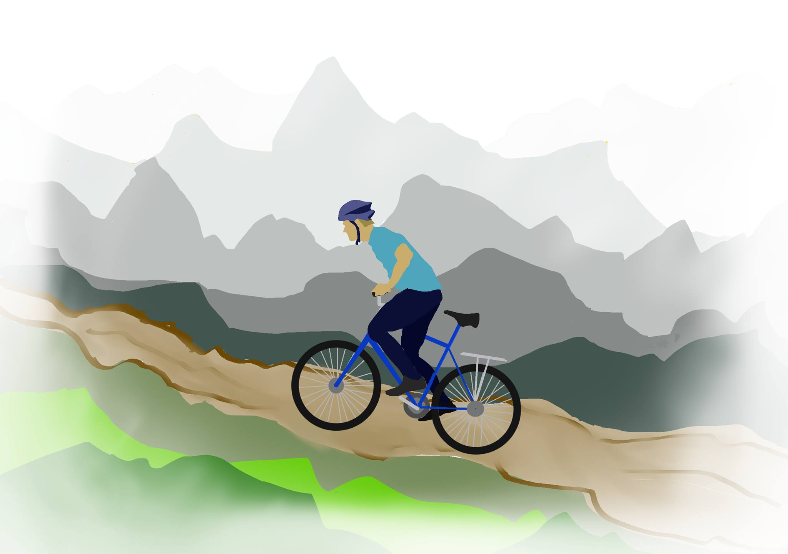

Broncel Błażej
Krótka prezentacja o sobie
Broncel Błażej Adres zamieszkania: 41-100 Gliwice Kochanowskiego 37 Data urodzenia: 25.05.1994r. Telefon: 792 535 551 E-mail: blabro@o2.pl
Doświadczenie: Praktykant ISPIK S.A.: praktyczne poszerzanie znajomości języków HTML5, CSS3, JavaScript i frameworku ExtJS, programowania obiektowego OOP, wzorca MVC, modelowania UML, testowania jednostkowgo Jasmine, języka znaczników Markdown
Wykształcenie: X 2013 – nadal •Politechnika Śląska, Wydział Automatyki, Elektroniki i Informatyki, kierunek: makrokierunek (automatyka i robotyka, elektronika i telekomunikacja, informatyka) w języku angielskim, tryb: stacjonarne IX 2010 – VI 2013 •I Liceum Ogólnokształcące im. Leona Kruczkowskiego w Tychach
Umiejętności: -Języki obce angielski (zaawansowany) -Programowanie C, C++ (podstawy), środowisko QT Creator, Visual Studio, kurs SQL, samodzielna nauka AngularJS, kurs C# grupy .NET Politechnika Śląska

Zainteresowania: -muzyka -gitara klasyczna: ukończenie Państwowej Szkoły Muzycznej I stopnia w Tychach -organy: ukończenie Studium Organistowskiego Archidiecezji Katowickiej
Idź w górę